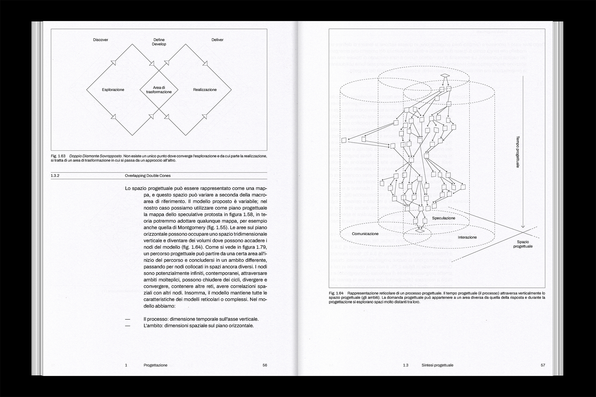
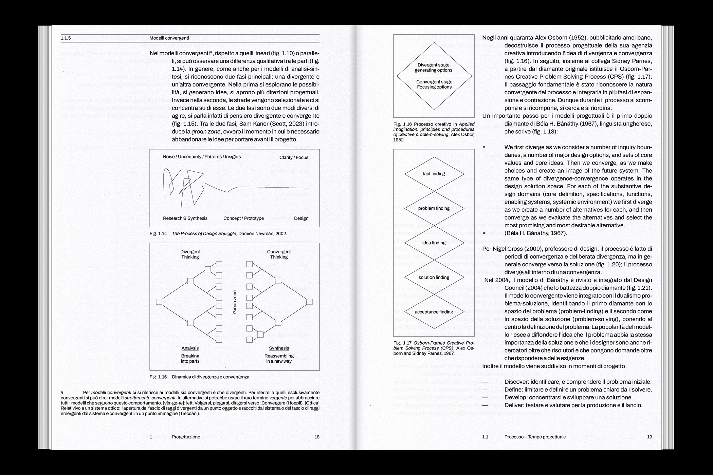

2023
"Specta è frutto di un processo creativo durato sei mesi che ha coinvolto diversi ambiti: branding, gra-
fica, coding, ux design, interaction design, video making, prototipazione, copywriting, foto-
grafia, web design, packaging design etc. È stata una progettazione complessa: nei seguenti
paragrafi verrà districato il tempo e lo spazio progettuale che è stato attraversato.
Sarà esaminato il progetto dal punto di vista temporale, della sequenza delle azioni, del processo ana-
lizzando i modelli e la loro classificazione; e dal punto di vista spaziale, del perimetro delle
discipline, dell’ambito analizzando le mappature il loro rapporto interdisciplinare. Il design è
tanto uno stato, un oggetto fermo, un artefatto nello spazio, quanto un verbo, un’azione, un
processo che si sviluppa nel tempo (Doblin, 1987).
La volontà di questo elaborato è restituire quella che è stata l’esperienza di progetto in quanto vero e
proprio laboratorio – una sperimentazione progettuale.
Lo scopo di questo capitolo è mettere alla prova la teoria attraverso un progetto, Specta, e proporre un
modello frutto di questa esperienza" (p.10)
Field
Research
Editorial
Collaborators
Francesco Bonetti
Federico Gajo
Emiliano
Garibaldi
Cecilia Pizzagalli
Camilla Tosi
Related projects
SPECTA® (Project)
Made at
Politecnico di Milano
Laboratorio di Sintesi Finale C1